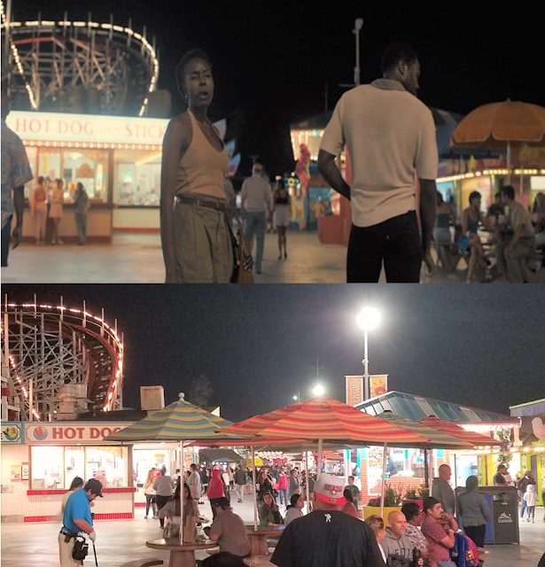
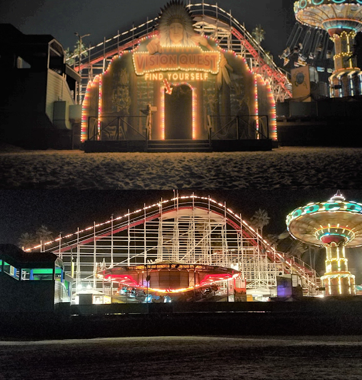
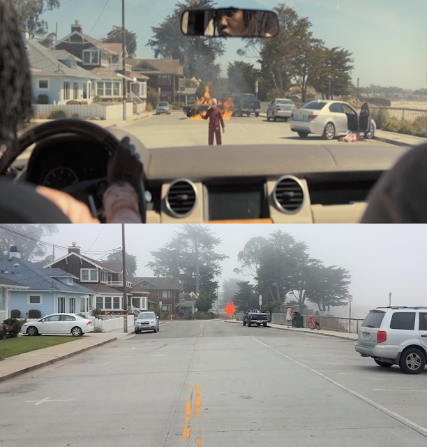
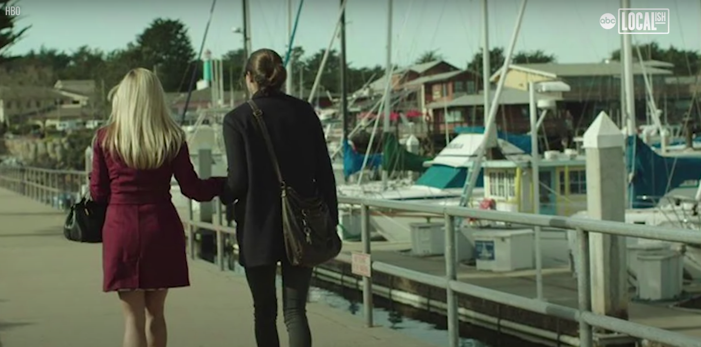
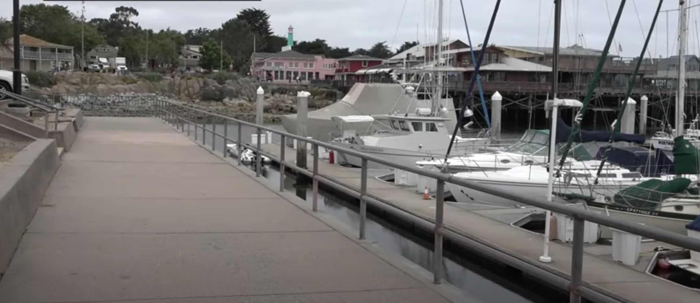
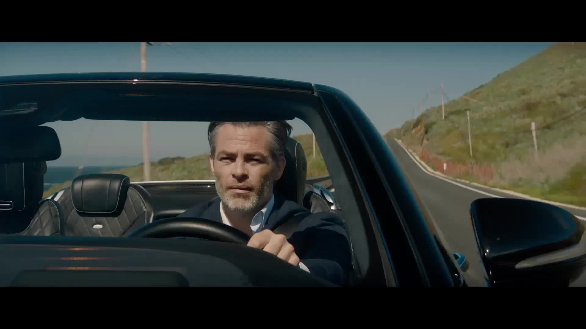
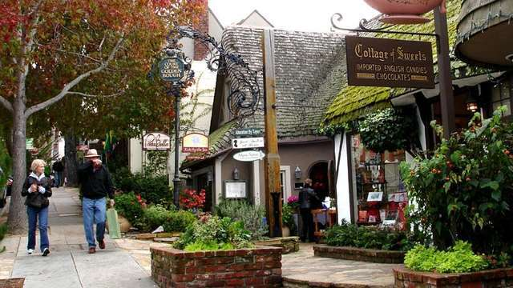
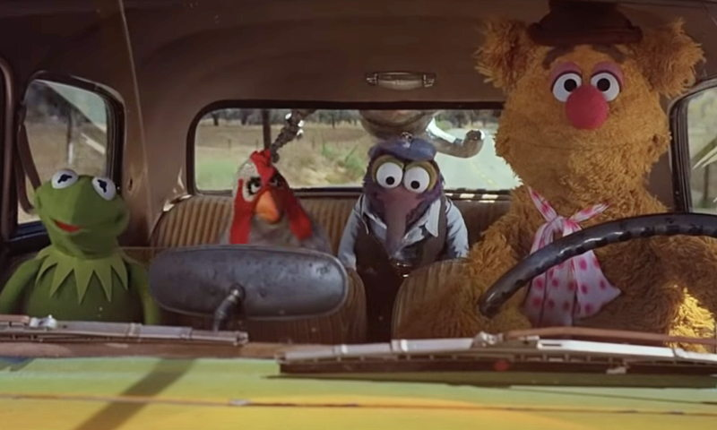
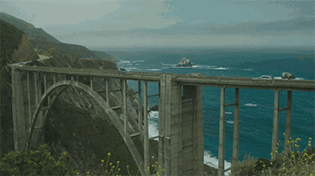
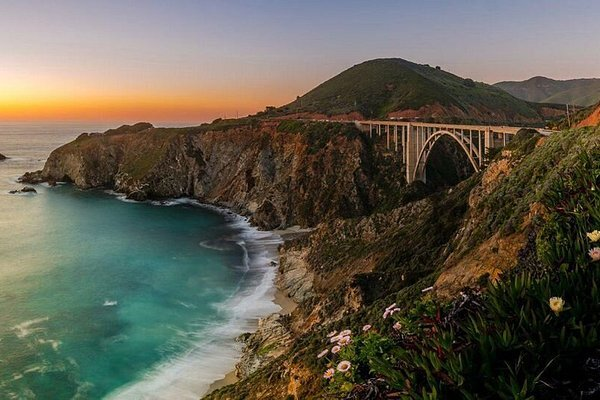

Santa Cruz
Info
Sant Cruz is hom to the The Santa Cruz BoardWalk, which is the oldest standing amusement park in California, having been opened in 1907. The boardwalk has been the backdrop of many films including the 2019 film, “Us”. With an Oscar nomination directed by Jordan Peele and lead actress Lupita Nyong’o. They shot on East Cliff Drive for three days in September of 2018. Some other movies filmed at the boardwalk are “Bumblebee”, “Chasing Mavericks”, “Dangerous Minds”, “The Lost Boys” and “Sudden Impact”. Scenes were also filmed on the UC Santa Cruz campus and Main Beach.
While filming "Us" Jordan Peele said there's a nod to “The Lost Boys” in the opening flashback sequence of "Us". The scene takes place in 1986, which is the year before the “The Lost Boys" was reassessed in 1987. In the movie “Us” the young girl walks down the Boardwalk, and her mother gestures toward the carousel, saying “They’re shooting a movie over there.”
Joel Schumacher directed "The Lost Boys" featured Jason Patric and Corey Haim as the brothers and main characters of the movie. Santa Cruz only allowed filming to take place there if the town was renamed in the film to Santa Carla because Santa Cruz did not want to be known as the “murder capital of the world”. Santa Cruz locations for the film include the Santa Cruz Boardwalk, Atlantis Fantasyworld Comic Book Shop, Santa Cruz Wharf, Pogonip Country Club, and off Interstate 5 on the Magic Mountain Parkway in the Iron Horse Trailhead trestle bridge.
Images
  Monterey Bay
History of the Monterey Bay Aquarium
On July 7, 1916 Knut Hovden opened the largest sardine cannery on Cannery Row. Unable to market enough, the Hovden cannery closed in 1973. By November 1977, plans for the world-class aquarium began to form. October 20th, 1984, the Aquarim opened its doors to 10,681 visitors on the first day. April 1986, Star Trek IV: The Voyage Home was filmed here at the Aquarium. On October 20, 2019 the Aquarium celebrated 35 years!
Star Trek IV: The Voyage Home
This movie, filmed in 1986, stars William Shatner as Admiral James T. Kirk and Leonard Nimoy as Spock. The premise: "To save Earth from an alien probe, Admiral James T. Kirk and his fugitive crew go back in time to SanFransisco in 1986 to retrieve the only beings who can communicate with it: humpback whales." This film, directed by Leonard Nimoy, was filmed at the Monterey Bay Aquarium. However, some CGI modifactions were made in order to portray a fictional humpback whale enclosure at the Aquarium.
Fun Facts
The real name of the whale museum, the Monterey Bay Aquarium, could not be used because the script required the action to take place in Sausalito, closer to San Francisco. The Montery Bay Aquarium has an annual average attendence of approximately 2 million people. The Open Sea exhibit(whale cgi in Star Trek) is 1.2 million gallons, 90 feet across, 52 feet front to back, and 35 feet tall. The Kelp Forest is 343,000 gallons and 28 feet tall. There are more than 77,000 animals representing 774 species at the Aqurium. The first and only to exibit and release great white sharks, to build a living kelp exhibit, to exhibit deep-sea cephalopods, to discover the lifecycle of several jellyfish species, and to consistenly propagate comb jellies.
Other TV and film highlights
2019 "Big Little Lies" 2016 "Finding Dory"; 2014 "Big Blue Live"; 2015 "Saving Otter 501"; 2011 "Oceans in Glass"; 2008 "Seven Pounds"; 1988 "Sphere"
Images


Big Little Lies
This HBO series stars Reese Witherspoon, Nicole Kidman, Shailene Woodley, Laura Dern, and Zoë Kravitz as five women in Monterey, California, who become embroiled in a murder investigation. Most locations were shot at the actual, physical, location along the Fisherman's Warf and the Monterey Bay Aquarium, Lover's Point, and parts of Big Sur etc. However, the set of the cafe was remade in Hollywood in order to control things such as weather, lighting, crowds, etc.
Images
 Carmel
Info
Welcome to Carmel, also known as Carmel-By-The-Sea! This little village lies on the Carmel River and Carmel Bay, and is only less than 15 minutes away from Monterey. Carmel is dominated by tourist attrations and activities, such as the 17 Mile Drive to Pacific Grove, eating at one of a kind restaurants, or just relax and enjoy the views.
Fun Facts
Former Mayor
Dirty Harry. Gran Torino. Unforgiven. What do these movies and Carmel have in common with each other? You guessed it. Clint Eastwood! Clint Eastwood was elected for mayor of Carmel and ran one term from 1986 to 1988.
Chain Restaurants
Do you want to go eat as a one of a kind shop for coffee, sandwiches, or even some wine? In Carmel, there are no chain restaurants! Head to a small business or family owned shop to enjoy fine-dinging and casual cuisine.
Banning of Shoes?
In Carmel, you're more likely to wear some comfortable shoes or sandals since you're going to be walking a lot. However, you're more less likely to be wearing high heels or see people in high heels. Why? Because high heels are banned in Carmel! The muncipal cofe of Carmel bans high heels that are more than 2 inches in height and less than one square inch. If you wanted to wear high heels, supposedly, you're supposed to get a permit at City Hall. Don't worry, it's free of charge.
Movies and Shows
All of the Old Knives (1979)
All of the Old Knives is based on the novel, "All of the Old Knives" written by Olen Steinhauer. This movie, starring Chris Pines and Thandiwe Newton, tells the story of a former operative and his former lover seeking to find the mole that leaked confidential information that could potentially get more than 100 people killed. The film was mainly shot in Monterey, but takes place all over! Once scene in particular is an introduction scene of Chris Pines' character driving down a road in Carmel. Another specific area that the film took place at is Ocean Avenue in Carmel.
The Muppet Movie
The Muppet Movie (1979) is about Kermit the Frog's road-trip adventure from Florida to California trying to pursue a movie career. Although the movie itself was mainly based around the Los Angeles area (Hollywood), there was a scene where Kermit and his friends passed by a cabbage field that is located in Carmel! The area isn't too specific in the scene and we only got a glimpse of it, but the field is still there!
Images
  Big Sur
Renowned worldwide for its natural features and relatively pristine scenery
Info
Big Sur is located along the Scenic Highway One approximately 150 miles south of San Francisco and 300 miles north of Los Angeles. Historically, the name Big Sur was derived from that unexplored and unmapped wilderness area that lies along the coast south of Monterey. It was simply called ‘El Sur Grande’, The Big South. Today, Big Sur refers to that 90-mile stretch of rugged and awesomely beautiful coastline. On one side is the majestic Santa Lucia Mountains and on the other, the rocky Pacific Coast.
Where is that stunning intro view? The Bixby Bridge
The stunning arch bridge featured in the show’s opening credits is actually located in Big Sur, 18 miles south of Monterey. the Bixby Creek Bridge, built in 1931, curves above a canyon in Big Sur, and is known for its unique architectural design.
Completed in 1932 for just over $200,000, it is one of the highest bridges in the world. It soars 260 feet above the bottom of a steep canyon carved by Bixby Creek. Today (as always) the bridge is a favorite attraction for photographers, from professionals to those in search of the ultimate depth-of-field selfie. But whether you are snapping away or not, be sure to take advantage of the multiple viewpoints.
Big Little Lies
Big Little Lies is an American drama television series based on the 2014 novel of the same name by Liane Moriarty. Big Little Lies stars Reese Witherspoon, Nicole Kidman, Shailene Woodley, Laura Dern, and Zoë Kravitz as five women in Monterey, California, who become embroiled in a murder investigation. Several scenes were filmed on location in the Monterey Peninsula, Big Sur, Pacific Grove, and Carmel Highlands. Especially the intro of this show is showing the famous bridge of the big sur. "Big Little Lies" weaves a darkly comedic tale of murder and mischief in the tranquil beachfront town of Monterey, Calif. Amidst doting moms, successful husbands, beautiful children, and stunning homes exists a community fueled by rumors and divided into haves and have-nots, exposing fractured relationships between husbands and wives, parents and children, and friends and neighbors. Told through the eyes of three mothers -- Madeline, Celeste and Jane -- the series' narrative explores society's myths regarding perfection and its romanticization of marriage, sex, parenting and friendship. Reese Witherspoon, Nicole Kidman and Shailene Woodley star as the three prominent "mothers of Monterey."
Big Sur Attractions
besides sightseeing from the highway, Big Sur offers hiking and
outdoor activities. There are a large number of state and federal
lands and parks, including McWay Falls at Julia Pfeiffer Burns
State Park, one of only two waterfalls in California that plunge
directly into the ocean. The waterfall is located near the foundation
of a grand stone cliffside house built in 1940 by Lathrop and Hélène
Hooper Brown that was the region's first electrified home.
However, parking is very limited and usually unavailable on summer
weekends and holidays.
Another notable landmark is Point Sur Lightstation, the only
complete nineteenth century lighthouse complex open to the public in California.
The Ventana Wildlife Center near Andrew Molera State Park features
a free Discovery Center that enables visitors to learn about the
California Condor recovery program and other wildlife.
There's also a special event in Big Sur. The Big Sur International
Marathon is an annual marathon that begins south of Pfeiffer Big
Sur State Park and ends at the Crossroads Shopping Center in
Carmel-by-the-Sea. The marathon was established in 1986 and
attracts about 4,500 participants annually. Civic leaders in Big
Sur stage a run each year in October to raise funds for the Big
Sur Volunteer Fire Brigade and the Big Sur Health Center. Since
the race, known as the Big Sur River Run, was founded in 1971,
more than $1,025,104 has been donated to the two organizations.
Fun Fact: Folk Festival
The Big Sur Folk Festival was held from 1964 to 1971. It began unintentionally when Nancy Carlen, a friend of singer Joan Baez, organized a weekend seminar at the Esalen Institute in June 1964 titled "The New Folk Music". On Sunday afternoon, they invited all the neighbors for a free, open performance. This became the first festival. The festival was held yearly on the grounds of the Esalen Institute, except for 1970, when it was held at the Monterey County Fairgrounds. Even when well-known acts like Crosby, Stills, Nash & Young or the Beach Boys performed, the event was purposefully kept small with no more than a few thousand in attendance.